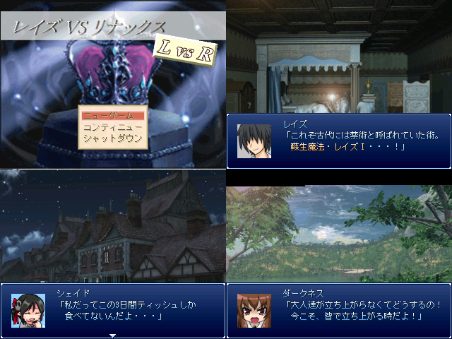

| №043 レイズ VS リナックス-L vs R- | |
|
 | |
| 作者：Ikuzah | |
| 作成ツクール：2000 | |
|
作者コメント 平和だった街に突然やってきた悪の領主が街の人々を苦しめる！ そして街の平和を取り戻す為、小さな小さな勇者が立ち上がる。 少女達は、果たして街に平和を取り戻す事ができるのだろうか。 ネウロ19巻読んでたら作りたくなってできたゲームです | |
|
管理人コメント これは勧善懲悪の王道ストーリーを期待できそう。 子供たちがどんな頑張りを見せるか今から楽しみ。 | |
| ダウンロード(3.32mb) / 感想掲示板 | |
| 前の作品 / 次の作品 / TOPへ戻る | |